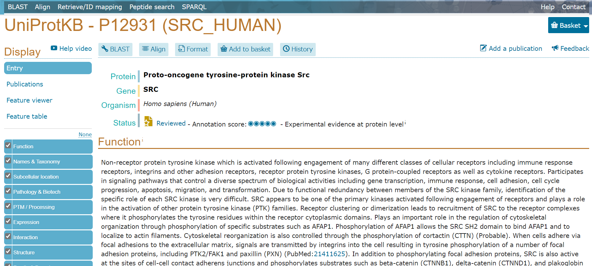
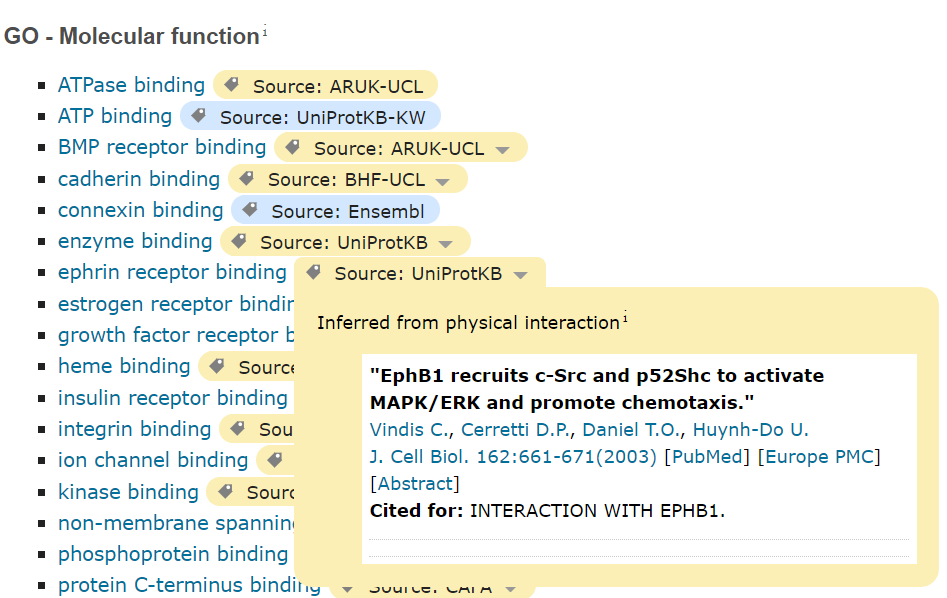
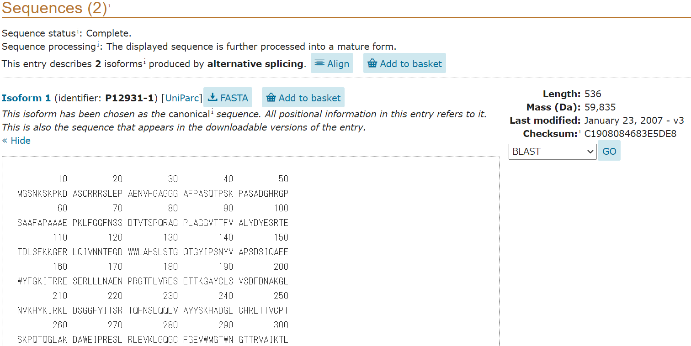

update : 2021/05/01 (追加)
アノテーション付きアミノ酸配列を取得できる。アミノ酸配列のFASTAデータや各種データベースへのリンクが分かる。
”Src” などの名前を知っているタンパク質・遺伝子の情報を見に行く。
検索窓から遺伝子名で検索をかけて Entry から開く。

最初に名前や生物種、Status(アノテーションの質など)が載っている。なお、左側のタブから各種の情報へ素早く移ることができる。
Functionではそのタンパク質の機能の説明を見ることができる。Catalytic activity (酵素活性) や 主要なサイトなどが載っている。"GO - Molecular function", "GO - Biological process" では Gene Ontology (biopapyrusさんの解説) の情報を得られる。各情報はタグマークのタブを開くことで参照元を確認できる。

Enzyme and pathway databases では Reactome などのパスウェイデータベースの情報を見られる。
Names & Taxonomy は俗称などの情報や taxonomy (系統・分類) の情報を載せている。Subcellular location では細胞内の局在の様子を、UniProt annotation と GO - Cellular component の二種類で可しかしてある。Pathology & Biotech は医学的な話題や変異の情報、医薬系のデータベースへのリンクが存在している。
PTM / Processing では翻訳後修飾 (Post-Translational Modifications) の情報とデータベースへのリンクを、Expression, Interaction では遺伝子発現、相互作用の情報が載っている。Structure はPDBの立体構造を（帯状の部分で選択した位置が二次構造ごとに表示）、Family & Domains ではドメインなどのタンパク質の情報を得られる。
Sequences ではアミノ酸配列情報が得られ、また FASTA 形式でのダウンロードが可能である（FASTAボタンから）。BLAST検索をかけることもできる。

Similar Proteins は UniProt Reference Clusters に基づいて選ばれた類似タンパク質の情報が見られる。
Cross-references にてその他多くのデータベースへのリンクを見ることができる。
UniProtKB の KB は Knowledge Base の略。